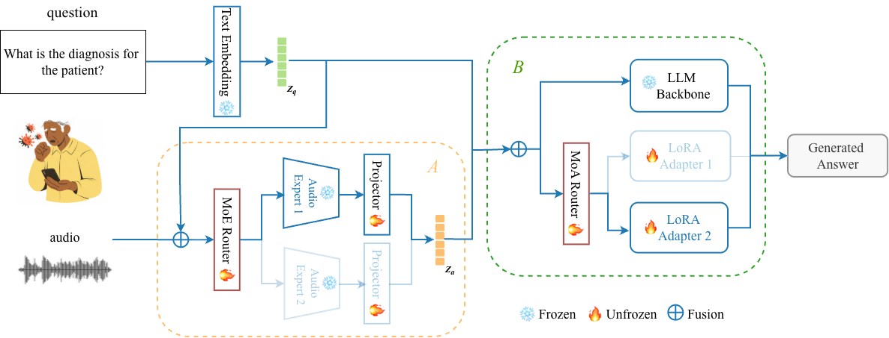
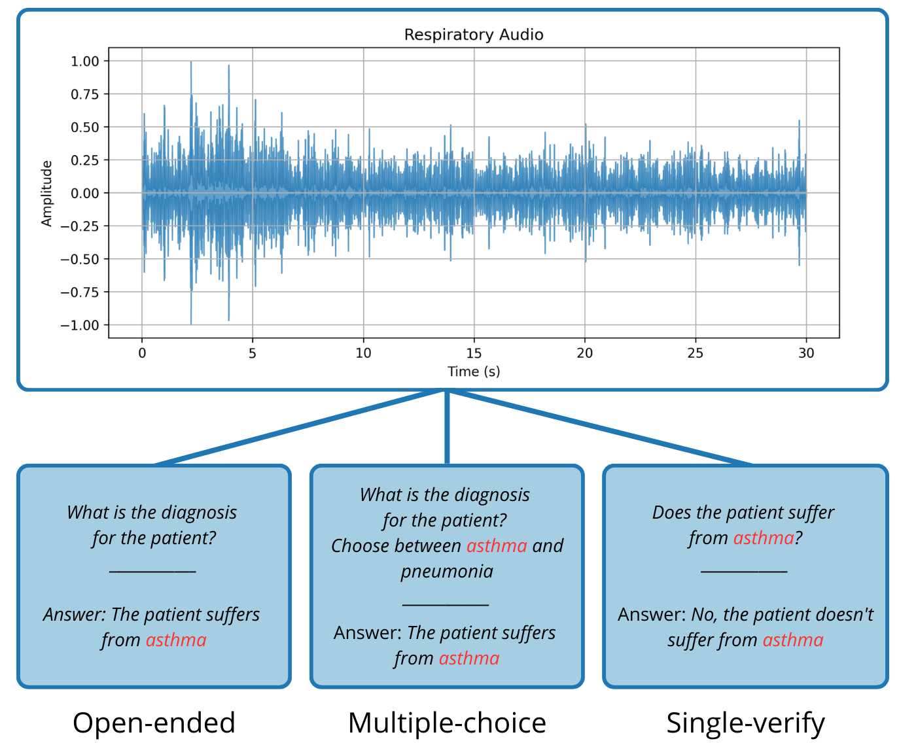

Research
My work focuses on trustworthy, adaptive, and resource-efficient machine learning for multimodal health monitoring.

Respiratory Audio Question Answering for Health Assessment Under Real-World Mobile Sensing Heterogeneity
Robust respiratory audio QA under real-world sensing variability · MobiUK 2026 · abstract
Investigated respiratory audio question answering for health assessment under the heterogeneity introduced by real-world mobile sensing conditions, with a focus on developing robust systems across diverse recording environments and devices.

Benchmarking Heterogeneous Audio Biomarkers for Respiratory Health Question Answering
Evaluation of heterogeneous respiratory audio biomarkers · IVBC 2026 · abstract
Benchmarked heterogeneous audio biomarkers for respiratory health question answering, examining how complementary respiratory sounds can support reliable and generalizable health assessment.

RAMoEA-QA: Hierarchical Specialization for Robust Respiratory Audio Question Answering
Hierarchically routed multimodal QA model · arXiv
Proposed RAMoEA-QA, a two-stage specialized generative system for respiratory audio QA: an Audio Mixture-of-Experts routes each recording to the most suitable pre-trained audio encoder, while a Language Mixture-of-Adapters selects a LoRA adapter on a shared frozen LLM to match query intent and answer format, improving robustness under domain, modality, and task shifts.

RA-QA: Towards Respiratory Audio-based Health Question Answering
Respiratory audio question answering benchmark · arXiv
Curated and harmonized 11 respiratory audio corpora to build RA-QA, the first respiratory audio question-answering dataset—about 9M QA pairs across 60+ attributes and three formats (verification, multiple-choice, open-ended)—and introduced a benchmark comparing audio-text generative models against traditional audio classifiers.